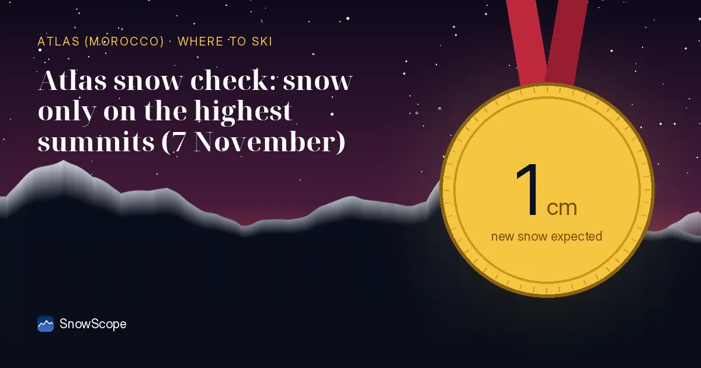

Atlas snow check: snow only on the highest summits (7 November)
On 7 November, all three Atlas ski resorts remain bare: no snow lies on Oukaïmeden, Jbel Hebri or Michlifen. Snow survives only on the bare rock and high terrain above the resorts, where the air stays cold enough to hold it.
See the live snow forecast for Oukaïmeden in the SnowScope appSnow depth, powder alerts and the 3D map, free.
What the snow map shows today
The Atlas held 190 km² of snow cover two days ago on 5 November. That shrank to 110 km² by yesterday, and to just 80 km² today. The deepest snow on the highest summits reaches about 9 cm.
All three resort zones lie empty: Oukaïmeden has 0 cm on its upper slopes, as do Jbel Hebri and Michlifen. The snow has retreated to bare summits that sit well above where any ski run begins.
| Resort | Snow depth | New snow, 72 h | Coming, next days | Top |
|---|---|---|---|---|
| Oukaïmeden | 0 cm | 0 cm | 1 cm | 3,258 m |
| Jbel Hebri | 0 cm | 0 cm | 0 cm | 2,108 m |
| Michlifen | 0 cm | 0 cm | 0 cm | 2,070 m |

Why the freeze line matters
On 7 November, the freezing level at Oukaïmeden ranges from 4,180 m to 4,420 m. The resort's top sits at 3,258 m, far below that line. This means rain or wet snow falls across every slope, from base to summit.
At Jbel Hebri (top 2,108 m) and Michlifen (top 2,070 m), the freezing level climbs even higher relative to the terrain. Both resorts lie in a zone where November rain is the rule, not snow.
Is a bare start normal for November?
Yes. Looking at past winters, the typical snow depth on this calendar date at 2,929 m near Oukaïmeden was 0 cm. In 46 past winters, Oukaïmeden matched or fell short of today's conditions in 33 of them. Early November is often dry across the Atlas range.
The two lower resorts, Jbel Hebri and Michlifen, have no snow history on this date either: they sit below 2,110 m and rarely hold white cover in November unless a cold storm moves in.
What comes next: a week of decay
Until 10 November, our forecast keeps the freeze line high and brings only 1 cm to Oukaïmeden (mostly on 9 November). The existing 9 cm on the highest summits will continue to thin as the air stays warm.
By 10 November, the snow map forecasts the Atlas will drop to 70 km²: a further loss from today's 80 km². What snow remains will be a thin veneer on exposed rock, not a stable base.
Which resort to watch for the next event
Oukaïmeden stands alone in having the height to catch snow when the next winter storm arrives. At 3,258 m, its summit sits high enough that cold air can keep precipitation white instead of wet. Jbel Hebri and Michlifen, both below 2,110 m, depend on much harsher conditions: a storm cold enough to push the freeze line down to their terrain.
When conditions change—and they will—Oukaïmeden will be the first to show white on the map. The two lower resorts will follow only if the temperature drop is steep enough.
Planning ahead
Early-season snow is thin and fragile. If you travel to the Atlas in the next few days, expect rocks and grass to hide just below any white patches. Stay on marked, groomed terrain where it exists.
Forecasts a few days ahead can shift with new weather data. Use the SnowScope app to follow the map as the week unfolds and to set a powder alert for Oukaïmeden. Check the resort's website to confirm that lifts are running before you pack.
Tips for skiers
- Early-season snow is thin and unstable: even a few centimetres can hide rocks and vegetation. Stick to open pistes.
- Oukaïmeden is the only resort high enough to turn November snow white. Watch its forecast closely when storms approach.
- The freeze line is well above all three resorts this week: rain will fall on every slope. Conditions will not improve until a much colder system arrives.
- Forecasts change day to day. Check the SnowScope map again before you travel.
- Before going off-piste, check the latest official avalanche bulletin and the resort's opening status on its website.
About these numbers
Resort snow depths are the deepest snow on the resort's upper slopes on the date shown; they are estimates for an area, not a measurement at one point. Forecasts can change. Always read the official avalanche bulletin before going off-piste.
Cite this report
For research, teaching or the press: the numbers and charts are free to reuse under CC BY 4.0 with this citation.
SnowScope (2026), Atlas snow check: snow only on the highest summits (7 November), https://snowscope.app/blog/en/2026/11/atlas-morocco-atlas-snow-check-7-november-2026.html, accessed 2026-11-07
SnowScope (Atlas Labs). (2026, November 7). Atlas snow check: snow only on the highest summits (7 November). SnowScope snow reports. https://snowscope.app/blog/en/2026/11/atlas-morocco-atlas-snow-check-7-november-2026.html
BibTeX
@misc{snowscope2026atlasmoroccoatlassnowche,
author = {{SnowScope (Atlas Labs)}},
title = {Atlas snow check: snow only on the highest summits (7 November)},
year = {2026},
month = nov,
howpublished = {\url{https://snowscope.app/blog/en/2026/11/atlas-morocco-atlas-snow-check-7-november-2026.html}},
note = {Published 2026-11-07 13:36 UTC; accessed 2026-11-07}
}· CC BY 4.0 · Methods, data and tools →
Oukaïmeden: snow and temperature by height, this winter vs last (tools) →
Follow Oukaïmeden
Free: a message when fresh snow is coming, and the forecast every morning.
More snow reports

A practical notebook on Oukaïmeden in the High Atlas: when snow usually comes, how much, which slopes to aim for and how to get there from Marrakesh.

On 15 December, Oukaïmeden mid-mountain has 16 cm vs Val Thorens 89 cm. We checked lift prices. Data from 13 November 2026.

On 15 December at Michlifen, 89% of winters are nearly bare. The best chance comes after a storm, not on the calendar. Data from 13 November 2026.